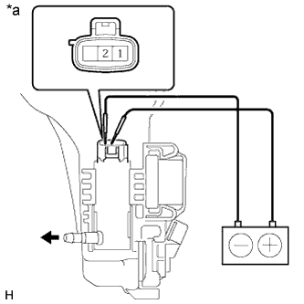

ЭЛЕКТРОДВИГАТЕЛЬ НАСОСА ОЧИСТИТЕЛЯ ФАР > ПРОВЕРКА |
| 1. ПРОВЕРЬТЕ НАСОС И ЭЛЕКТРОДВИГАТЕЛЬ НАСОСА ОЧИСТИТЕЛЯ ФАР В СБОРЕ |
Снимите бачок омывателя.
Отсоедините разъем электродвигателя и насоса очистителя фар в сборе.
Заполните бачок омывателя омывающей жидкостью.
|  |
Подсоедините положительный (+) вывод аккумуляторной батареи к контакту 2 электродвигателя и насоса очистителя фар, а отрицательный (-) вывод – к контакту 1.
| *a | Устройство с отсоединенным жгутом проводов (насос и электродвигатель насоса очистителя фар в сборе) |
Убедитесь, что жидкость для стеклоомывателя вытекает из бачка омывателя.